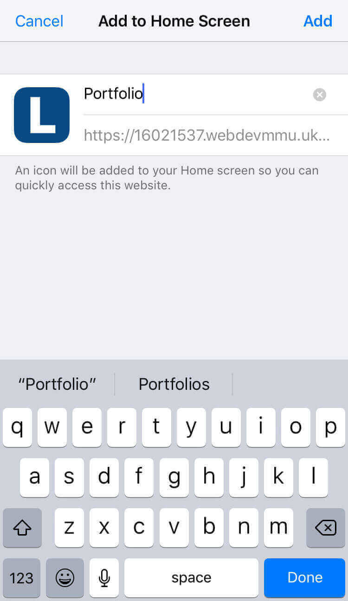
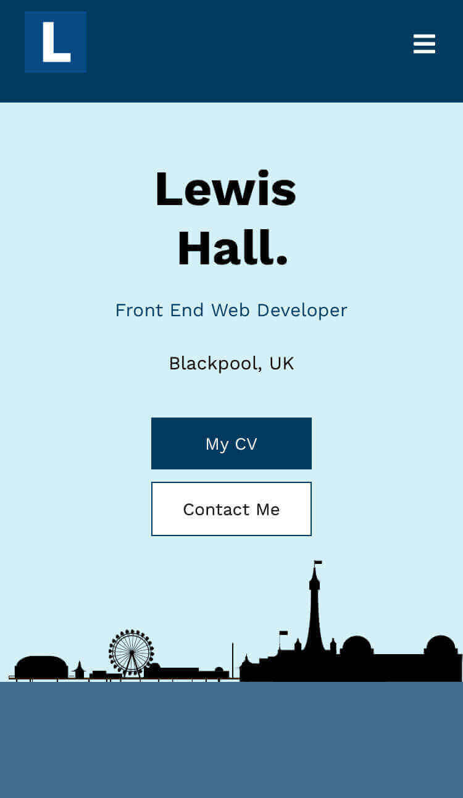

Aim and objectives
To research, design and implement progressive web apps into my portfolio
- To research information about progressive web apps and how it is used.
- To implement aspects of progressive web apps into my already existing portfolio.
What are progressive web apps?
Before starting this project I didn't have much, if any, knowledge on what Progressive Web Apps were, what they did or how to use them. All I knew was that this is an upcoming technology that many industries are looking to implement in their projects. From this I knew that I had to experiment with PWA’s.
Ionic framework define PWA’s as “a web app that uses modern web capabilities to deliver an app-like experience to users.” They should be able to load instantly (even when offline or on low quality networks), served via HTTPS and ‘App like’.
Setting up HTTPS
In order for PWA’s to work you need to make sure that you are hosting the site through HTTPS which was something I had never done before.
Luckily this daunting task was easier than I first anticipated. All I had to do was follow a simple guide published by 34sp and enable an SSL Certificate. This whole process took around 5 minutes.
However it would be silly to keep having to upload files directly to 34sp every time I made a change, therefore I used a Visual studio code extension that allowed me to see the website through a live server.
Servive workers
Before actually implementing any sort of PWA I had to first make sure that I had a service worked in place. A service worker is a script that your browser runs in the background, separate from a web page
In order to install a service worked into my site, I first had to register it within main.js. Registering a service worker will cause the browser to start the service worker install in the background. This then enables us the work with features of PWA’s.
See the Pen Service worker by Lewis Hall (@NotLewis) on CodePen.
Push notifications
After creating a simple service worked the first PWA element I decided to implement into my portfolio were notifications. My goal was to let the user know that a new blog post has been published on my site.
See the Pen Notifications by Lewis Hall (@NotLewis) on CodePen.
First I had to check that notifications are supported by the users browser. This is seen in the first line of the code above.
Next I had to manage the users permissions on notifications. The user will either fall into one of three categories: Granted, denied and default. If the user falls into the category “Granted” then notifications will be displayed normally. If the users permissions are not set to denied then the browser will simply receive a prompt requesting for permission. If the users has denied notifications then nothing will be shown. The browser will only request for permission of notifications when the user implies interest of having notifications sent.
Finally I had to set a variable which contained all the options that will be included in the notification, the text and icon. Then I created a new notification with the title “New blog posts!”. Whenever the user loads the homepage a notification will appear with the title, text and icon displayed.
Making my site work offline
In order to make my portfolio work with a limited or no connection I had to make sure that my entire website was cached. Making sure that my portfolio works on a limited or no internet connection is vital when producing a PWA. "Internet connections can be flakey or non-existent on the go, which is why offline support and reliable performance are common features in progressive web apps."(Cohen, M. Osmani. A. 2019:online)
This was done using caching through the service worker. Caching is when a copy of the website is locally stored when a user visits a page for the first time. The next time the user requests the same page, a cache will serve the copy of the page. This drastically improves the website load time and means that the user will be able to access the site offline.
This section was one of the most complicated as it required lots of coding and JavaScript knowledge.
See the Pen Caching by Lewis Hall (@NotLewis) on CodePen.
Native app features
For implementing native app features I followed a simple guide that can be found on google developer website.
In order to make my portfolio an app on a users phone I had to user a web app manifest. This is the final piece of a progressive web app which allows the app to leave the browser and become a standalone native like app on the users device.
The web app manifest is a simple JSON file that provides the browser information about the app and doesn't require any coding. The web app manifest includes the name of the app, the page it launches onto, the type and size of the app icon image and how the page will be displayed.
I found a easy to use website that pretty much does all of this for you. Web App Manifest Generator
The manifest file is the linked into the index page, just as you would a style sheet.
In order for the user to add this as an app, they would have to visit the site a few times in order to get a notification prompting them to install an app to their home screen.
iOS
NOTE: This feature is not fully implemented with iOS at the time of writing this. This meant that I had to make a seperate icon
specifically for iOS devices and then manually add the icon to my homepage This was done by adding the following code inside the header
link rel="apple-touch-icon" sizes="180x180" href="/apple-touch-icon.png"
- To do this (on iOS), first load up my portfolio using the Safari web browser (as seen in the image above).
- Next click on the share icon at the bottom of the screen. This should bring up another menu with several options. Choose the option to 'Add to Home Screen'. 
- Then click 'Add' in the top right corner.
- This should then add an app icon to your iOS device. 
- Clicking on the icon will bring up my portfolio in an app like state. Once opened, you will be able to access the website without any internet connection
Conclusion
As you’ve seen, PWA’s are incredibly useful when trying to make your website or app more user friendly. It enables users to use your website with poor internet connection and even add an app to their phone where they can easily launch your website without much hassle. I recommend everyone reading this to try it out for yourself!